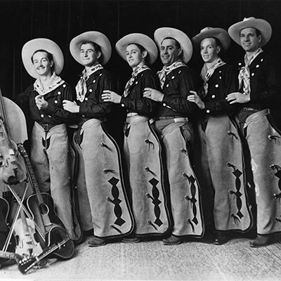
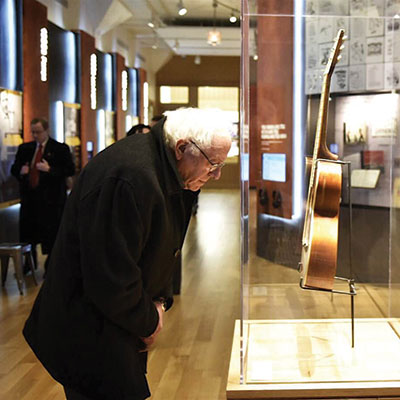

Made for you and me
Woody Guthrie's working-class archive

Woody Guthrie in New York City, 1942.
Courtesy of the Woody Guthrie Center. Photograph by Robin Carson.
Before it was the most conservative state in the country, Oklahoma was a different shade of red. After some 2 million acres of “unassigned lands” were opened to white settlement in 1889, corporate conglomerates became shadow rulers of the young and turbulent territory. As their power calcified over the following decades, the Socialist Party of Oklahoma rose as a collective response from scores of debt-ridden, small-holding farmers struggling to make dignified lives for themselves on the unforgiving southern plains.
Few figures in Oklahoma history embody the struggle of its working people, and the unique flavor of its radical inheritance, like Woody Guthrie. The populist folk singer and Communist fellow-traveler from Okemah changed America forever with his songs about the plight of workers and the forces of capital pushing against them: bankers, bosses, cops and landlords.
One landlord Guthrie particularly despised was Fred C. Trump, father of the 45th president of the United States. Guthrie rented a Brooklyn apartment in the real estate shark’s Beach Haven complex in the summer of 1950. (Guthrie called it “Bitch Haven.”) The wealthy developer built his fortune exploiting subsidies from the Federal Housing Authority and discriminating against black tenants. Guthrie was not a fan.
I suppose
Old Man Trump knows
Just how much
Racial Hate
he stirred up
In the bloodpot of human hearts
When he drawed
That color line
Here at his
Eighteen hundred family project
Dr. Will Kaufman, an American studies scholar living in the UK, discovered Guthrie’s writing on the senior Trump in 2014 while doing research in the Woody Guthrie Center archives in Tulsa. When he first unearthed the papers, it didn’t strike him as incredibly meaningful. “It was nothing more than a curiosity to me—you know, ‘Huh, how about that. Woody’s landlord was that loudmouth Apprentice guy’s father,’” Kaufman remembers.
Two years later, as the billionaire game show host and real estate mogul descended on a golden escalator to announce his intention of becoming the most powerful man in the world, the finding would feel much more explosive. “It wasn’t until Donald announced his candidacy, proclaiming ‘My legacy is my father’s legacy,’ that it occurred to me Woody had something to say about that very legacy of race hate and discrimination in the Trump real estate empire.”
The scholar suddenly found himself sitting on a cultural bombshell: Guthrie, folk hero of America’s underclass, heaping scorn on a racist real estate tycoon who would spawn a dynastic empire for his son to inherit before bullying and bloviating his way to become President of the United States. And the story was waiting right here, on aging notebook paper, in a climate-controlled vault in Tulsa.
What else can we learn about the life and times of this American iconoclast and hero of the common man? To find out, we go deeper into Woody Guthrie’s working-class archive.
* * *
“You have to understand the way he wrote to know how long it’s going to take you to dig through some of these things,” says Woody Guthrie Center executive director Deana McCloud as she strolls through the museum, empty of the usual crowds on a closed Monday. Instruments and scraps of notebook paper thrum with history under layers of glass as digital screens of interactive lyric sheets blink and beckon. A virtual reality headset rests on the seat of a weathered rocking chair in a model of a Dust Bowl-era homestead porch.
Although Guthrie was only able to be creative for about 14 years before his motor skills deteriorated from Huntington’s Disease, the prolific artist left behind a wealth of printed material. “I mean, just the notebooks alone here,” McCloud says. “We have 130 notebooks that he wrote lyrics and personal observations. You know, it’s a treasure trove.”
But as the technological flourishes suggest, a huge part of the mission here is to bring this vast archive into a new, fast-moving century. “We don’t have a huge physical footprint,” McCloud explains. “Our building is not a large facility, but we pack a really big punch because we have so many interactives ... things that people can manipulate and become a part of.”
How many physical objects are archived behind the scenes at the Woody Guthrie Center? McCloud says the Center holds more than 10,000 items in its permanent collection, making it the largest repository of Guthrie-related materials on the planet. If we’re talking individual scraps of paper, the number tops a million.
Even the design of the space is maximized to bring archive materials to life. Four hundred laser-etched metal plates made from digital scans of Guthrie’s notebooks wrap around the gallery’s main exhibition island, many bearing pro-union messages and depicting historical scenes of worker exploitation. “It’s as close as we can get to exhibiting the actual paper without having to take it out of the vault where it’s nice and safe and happy,” McCloud says.
Of course, some of that original material is on careful display in the gallery space—including Guthrie’s handwritten screed on Fred C. Trump. It’s here that Guthrie’s political legacy lives on scraps of notebook paper, in drawings and lyrics and letters, facing the public or held in the vault, waiting to be discovered.
As McCloud points out, the materials at the Woody Guthrie Center can help us connect the life of the artist to the headlines of today. “The things Woody was writing about in his time are still issues that we struggle with,” she says. “The focus most recently probably, other than the Trump [materials], has been Woody’s writing ‘Deportee,’ and the connection with current events, the way we are treating people and deporting people, separating families.”
While Woody’s sympathies aligned with the pre-WWII Communist Party of the United States, he never belonged as a member despite frequent contributions to their publication, The Daily Worker. “The humorous answer is [the Communists] wouldn’t take him because it involved having to pay dues, and then completing a job,” McCloud says with a laugh. “They expected you to actually take a job and complete it, and he’d wander away. He didn’t sit still for long enough.”
All that wandering gave Guthrie a look at what life was like for people in all corners of the globe, a knowledge contained in the tens of thousands of objects held with great care in the Woody Guthrie Center archives. “He was middle-class himself, but so much of his writings and artwork is filtered through a proletarian awareness and identification with working people the world over,” according to Kaufman.
One collection in particular draws Guthrie’s working-class ethos into sharp relief. This Is the Hand is a 19-panel series of drawings, depicting with raw urgency the plight of a working man ensnared by the forces of capitalism. “You have the boss who’s just giving this poor guy this small amount of bread, and he’s trying to figure out how to feed his family. And when he asks for more and goes and cusses out the boss, the boss calls the cops. The guy gets arrested. And all he’s trying to do is feed his family and ask for a fair wage,” McCloud says.
The series ends with a blunt call to action: Join the CIO.
* * *
In six years of existence, the Woody Guthrie Center has established itself as the epicenter of knowledge around the life and times of its populist namesake—and it’s not just scholars and the general public who are stopping by. Presidential candidate and democratic socialist Bernie Sanders was late to a 2016 rally in Tulsa after making an impromptu drop-in at the Center.
“With some of our VIP guests, they’re reserved and respectful … but Bernie was a fan. He was fan-boying,” McCloud says. “We had some other Dylan stuff and other folk revival artists in the temporary gallery. He didn’t want to see that. He just wanted to see the Woody stuff. ... It was so much fun to show him things, because he was just soaking it all in.”
For progressive torchbearers like Sen. Sanders, communing with the objects at the Woody Guthrie Center is almost a spiritual experience; for scholars like Kaufman, it has revolutionized their idea of the man altogether. “I almost can’t describe what the Woody Guthrie Center archives unlocked for me—how far its holdings took me beyond whatever I’d thought or known about Woody beforehand,” he said. “He was such an extensive commentator on the times of his life. He was an obsessive recorder of impressions.”
Those impressions—lyrics, sketches, jokes and journals—amount to a rounder understanding not just of Guthrie, but of the time and place that produced him. As Kaufman’s discovery of Guthrie’s contempt for a scheming Brooklyn landlord shows, this living archive in Tulsa is continuing to show us who we are and where we come from.
“I had a conversation with Pete Seeger about it,” Kaufman remembers. “He asked me if I’d ever heard the phrase, ‘The Other America,’ taken, as we know, from Michael Harrington’s 1962 study of American labor and progressive movements and the possibilities for democratic socialism in America. This is an America that the wider world has rarely seen—and as Pete told me, Woody was actually the voice of that ‘other America.’”

.jpg)
.jpg)